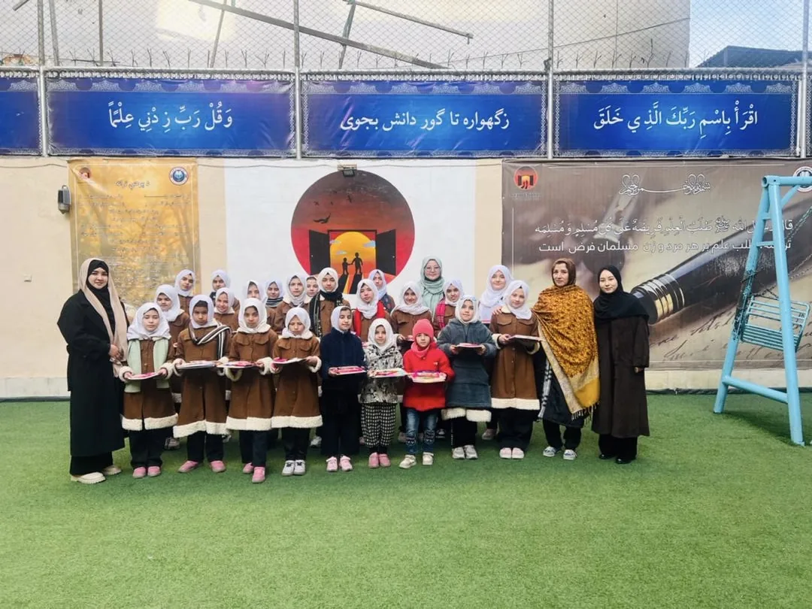

Community
Our Friends
A space to recognize organizations, educators, volunteers, and supporters who collaborate with Girls for Knowledge.
Placeholder partners — replace these cards with official partner names, logos, and links.
01
Education Partner
Placeholder organization02
Community Partner
Placeholder organization03
Volunteer Network
Placeholder organizationInterested in becoming a partner?
Contact Girls for Knowledge to discuss educational, community, or support partnerships.